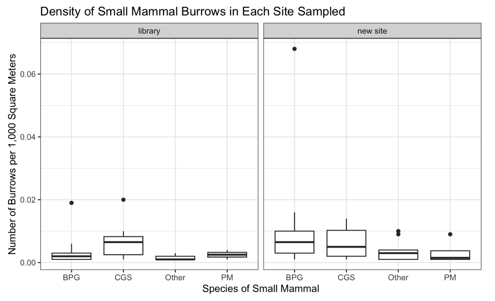
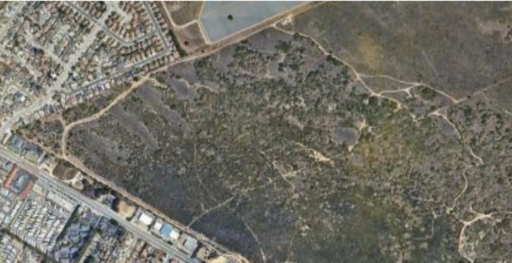
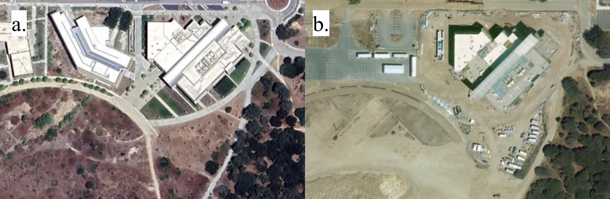
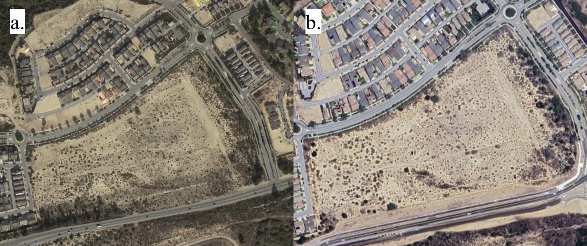
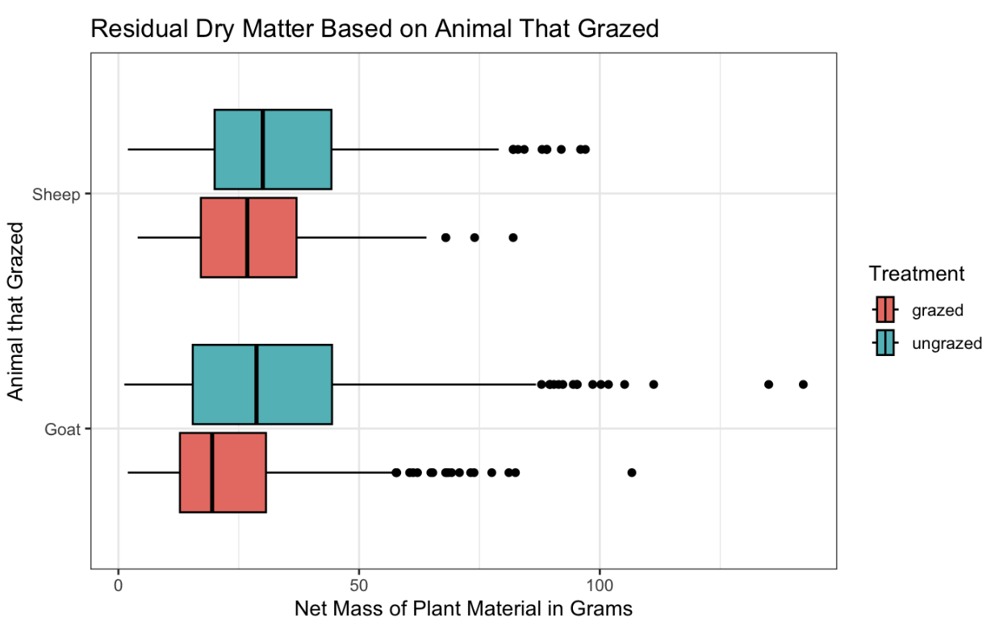

Other Papers Written for Quantitative Field Methods Course
Research Proposal
Exploring the relationship between small mammal diversity and time since anthropogenic disturbance.
Aiden Roach
Abstract
Ecosystems rely on mammals for a variety of services, especially indicating the health of the surrounding area. They are particularly sensitive to human disturbances and can provide evidence of when an area is recovering from human activity. This study aims to quantify how long it takes for small mammals to recolonize an area after human disturbance utilizing methodology applied to a pilot study from the ENVS 350 Fall 2025 class. If a timeline of small mammal recolonization is established, future monitoring programs will only have to complete surveys at those benchmark times rather than using time and money to consistently monitor the habitat of interest.
Introduction
Mammals play a vital role in their surrounding environment. They have multiple roles in ecosystems, including seed dispersal, population control for plant species, and aerating soil as they dig burrows. Because of their importance in their habitat, a decline in mammal activity can be an indication that the surrounding ecosystem is becoming unstable (Derhé et al. 2017). Other studies have explored methods to reintroduce mammals to affected habitat and how to maintain the reintroduced populations. It’s known that the ability of small mammals to recolonize an area is influenced by the connectivity of surrounding habitat (Mérő et al. 2015). However, whether or not the ability of small mammals to recolonize an area is influenced by the time since disturbance has not been quantified, especially in a coastal scrubland.
Hypothesis
This study aims to quantify how mammal diversity varies based on when the site was last disturbed by human activity, specifically in coastal scrubland habitat. As the time since anthropogenic disturbance increases, we expect the diversity of small mammals to also increase. A pilot study was completed by the ENVS 350 Fall 2025 class which examined the density of small mammal burrows at two sites on the California State University of Monterey Bay campus. The pilot study utilized the same procedure described in the methods section of this paper. An example graphic produced by the pilot study is shown in Figure 1 and shows possible differences in small mammal density by site. Given the ease of this pilot study, the proposed study with the additional variable of time since disturbance should have no limitations in terms of feasibility.
Methods
Data Collection
The following three sites for data collection are being proposed for their varying amount of disturbance. The University of Santa Cruz’s Fort Ord Natural Reserve has not been disturbed in at least 30 years given that the reserve was incorporated in 1996 (Fort Ord Natural Reserve – Natural Reserves 2022). Based on imagery from Google Earth, the area behind the Tanimura & Antle Family Memorial Library at California State University of Monterey Bay was disturbed 16 years ago when construction of the library was completed. The area between Imjin Parkway and Abrams Drive as well as Denali Drive and Marina Heights Drive in Marina, California was disturbed about six years ago when construction of housing units was completed. Images of each proposed site can be found in Figures 2, 3, and 4 respectively. A randomly placed 100 by 200 meter area will be defined using ArcGIS prior to data collection. The area will then be subdivided into 20, 10 by 100 meter transects. Surveyors will be randomly assigned to a transect and inspect the entire 10 by 100 meter area for mammal burrows. Data will be logged onto a shared map using the ArcGIS Field Maps program. This procedure will be repeated for each site.
Statistical Analysis
Graphics will be created using the tidyverse package in R, specifically the ggplot2 package included. A parametric ANOVA test will be used to assess if the density of mammal burrows varies by site along with a Tukey post-hoc analysis if significant results are found. If the assumptions of the parametric test are not met, a permuted ANOVA as well as permuted two-sample t-tests for the post-hoc analysis with a Bonferroni correction will be used as an alternative. A power analysis to calculate the necessary sample size using the pwr package in R has already been completed using the following values: number of groups is equal to three, effect size is equal to 0.25, significance level is equal to 0.05, and power is equal to 0.8. Effect size was calculated using the cohen.ES function included in the pwr package using a medium effect size. Based on the results of this power analysis, each group needs a minimum of 53 burrows for a power of 0.8. A possible limitation of this study is that a site simply may not contain 53 burrows. If that is the case, a second study site could be considered.
Conclusion
We should be monitoring the diversity of small mammals as an indicator of the health of the surrounding ecosystem. Small mammals are particularly sensitive to human activity (Lawer et al. 2019). Given their reactiveness, if the diversity of small mammals is relatively high for an area then it would indicate that other species have likely recolonized the area again. This project would also provide some indication of how long it takes for small mammals to reestablish themselves in an area, and therefore provide an appropriate time to assess habitat stability. For example if this project finds the small mammals can reestablish themselves about five years after disturbance, then future projects can save time and money by only assessing their study area five years after disturbance rather than yearly.
Figures




References
Derhé MA, Murphy HT, Preece ND, Lawes MJ, Menéndez R. 2017. Recovery of mammal diversity in tropical forests: a functional approach to measuring restoration. Restoration Ecology. 26(4):778–786. doi:https://doi.org/10.1111/rec.12582.
Fort Ord Natural Reserve – Natural Reserves. 2022. Ucscedu. https://naturalreserves.ucsc.edu/fort-ord-natural-reserve/.
Lawer EA, Mupepele A-C, Klein A-M. 2019. Responses of small mammals to land restoration after mining. Landscape Ecology. 34(3):473–485. doi:https://doi.org/10.1007/s10980-019-00785-z.
Mérő TO, Bocz R, Polyák L, Horváth G, Lengyel S. 2015. Local habitat management and landscape-scale restoration influence small-mammal communities in grasslands. Animal Conservation. 18(5):442–450. doi:https://doi.org/10.1111/acv.12191.
Conference Abstract
Comparing Grazing Efficiency for Domestic Sheep and Domestic Goats
Aiden Roach
Introduction
There are multiple treatments used in grasslands to manage invasive plant species. One of the earliest in human history is using livestock for grazing. Prescription grazing is defined as using livestock under set parameters to achieve a certain management goal (Frost and Launchbaugh 2003). Prescription grazing is most efficient over long-periods of time as opposed to a singular grazing application (Treadwell et al. 2023). This study aims to determine if domestic goats or domestic sheep are more effective at reducing the net mass, in grams, of plant material. If one species is determined to be a more effective grazer, managers of grassland habitats can make a more informed decision of which grazing herds to implement.
Methods
The study site was Fort Ord National Monument in Monterey County, California. A 9,600 meter2 plot was randomly placed using ArcGIS. This plot was then divided into 16 transects which were ten meters by 60 meters. Each transect contained six, ten meter by ten meter, plots with a randomly determined point within each plot. At each point, a half meter by half meter square constructed with PVC pipe was placed on the ground. Within the cell, all plant material was cut, collected into a paper bag, dried, and weighed as described in Elzinga, Salzer, and Willoughby 1998. This process was repeated each year for the 23 years of data collection.
Results
From 1998 to 2021, 1471 plots were grazed by goats and 401 plots were grazed by sheep. A square-root transformation was applied to normalize the data. When looking at the boxplots in Figure 1, we see that the entire boxplot for sheep grazing overlaps with the entire boxplot for goat grazing. The complete implies that there is likely no difference in the true mean net mass, in grams, in a plot grazed by goats and the true mean net mass, in grams, in a plot grazed by sheep, assuming the treatment of grazed or ungrazed is held constant. However, we found moderately strong evidence against our null hypothesis that there is no difference in the true mean net mass, in grams, in a plot grazed by goats and the true mean net mass, in grams, in a plot grazed by sheep, assuming the treatment of grazed or ungrazed is held constant (F = 9.644, degrees of freedom = 1, \(\alpha\) = 0.05, p-value = 0.00193). Using a Tukey post-hoc analysis, we found moderately strong evidence against our null hypothesis that the true mean difference in plots that were grazed by sheep and in plots that were grazed by goats is equal to one (t = 5.020748, \(\alpha\) = 0.05, p-value = 0.0026979).
Conclusion
There is a significant difference in the true mean net mass, in grams, in a plot grazed by goats and the true mean net mass, in grams, in a plot grazed by sheep, assuming the treatment of grazed or ungrazed is held constant. Goats are more efficient at reducing the net dry mass of plant material than sheep. However we should be cautious of trusting the results of our analysis because we did not meet the condition of normality or the condition of equal variances, which prevents us from using the F-distribution as a model for our sampling distribution. Future studies could explore the same research using nonparametric analyses.
Figures

References
Elzinga C, Salzer D, Willoughby J. 1998. MEASURING & MONITORING Plant Populations. Denver, CO: U.S. Department of the Interior Bureau of Land Management. https://www.ntc.blm.gov/krc/system/files/legacy/uploads/3342/technical%20reference.pdf.
Frost R, Launchbaugh K. 2003 Dec. Prescription Grazing for Rangeland Weed Management. https://targetedgrazing.wordpress.com/wp-content/uploads/2014/02/frost_launchbaugh_rangelands_03.pdf.
Treadwell M, Brooke C, Sullivan E. 2023. TARGETED GRAZING WITH GOATS AND SHEEP Associate Professor, Rangeland, Wildlife, and Fisheries Management and Extension Range Specialist, Texas A&M AgriLife Extension Service 2 County Extension Agent -Agriculture & Natural Resources, Texas A&M AgriLife Extension Service. https://agrilife.org/westtexasrangelands/files/2023/03/targeted-grazing-with-goats-and-sheep.pdf.